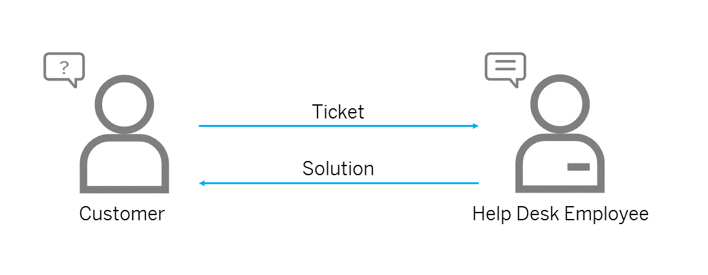
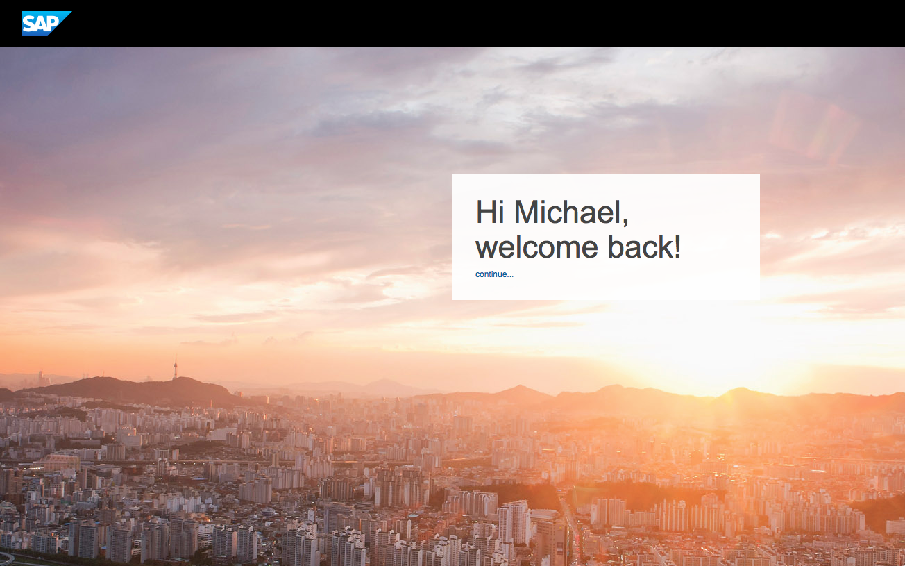
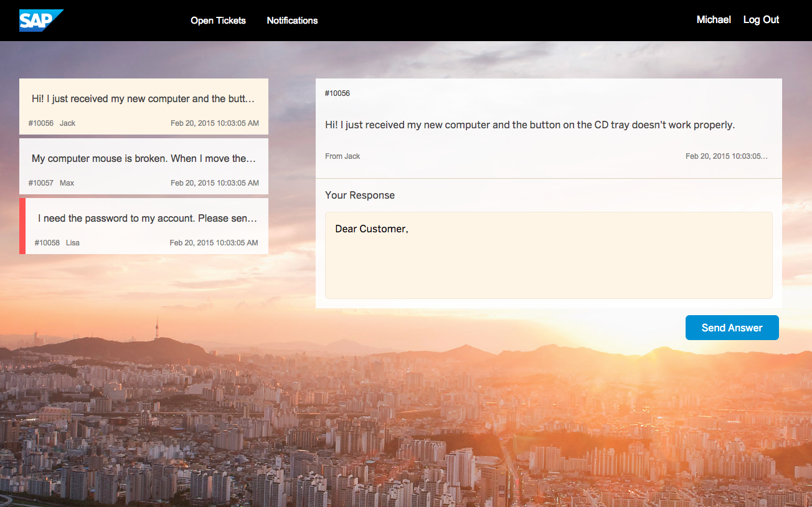

In this case study, a demo application will be gamified in order to demonstrate the implementation and configuration of a gamification concept step by step.
The demo host application is a “Help Desk” software, which is typically used by call center employees. Customers can create tickets (for an issue with software or hardware, for example) and call center employees can process these tickets.

The image below shows the welcome screen of the Help Desk application. The welcome screen appears once the user is successfully authenticated using the identity provided. The user must have the role helpdesk. The assignment of roles is described in page Roles.

Once the user is logged on, an overview of the open tickets is displayed on the left side (see the picture below). The user can select a ticket and process it by entering comments. No further actions are necessary in the demo application. Once the user has entered an appropriate response, the user can click Send Answer to process the ticket.

The demo application already includes a gamification implementation.